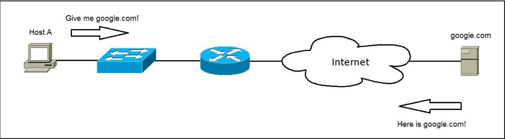

What is Apache HTTP Server?
-> Apache HTTP Server (usually called just Apache) is an open-source web server developed by the Apache Software Foundation. -> Apache is the most popular web server software on the Internet; it is estimated that 50% of all active websites use Apache as their web server. -> The Apache project was launched in 1995 and was based on an older web server software called NCSA HTTPd. -> The software is free and open-source, licensed under the Apache License that allows the user of the software the freedom to use the software for any purpose, to distribute it, to modify it, and to distribute modified versions of the software. -> Apache HTTP Server is cross-platform. It is available for a number of operating systems, including: - Windows - OS X - Linux - Unix - FreeBSD - Solaris -> Apache support many features and its functionality can be extended using compiled modules. Here are the major features: - A very robust web server that can handle large volumes of traffic. - One Apache installation can serve many different Web sites using virtual hosts. - Configurable error messages. - Supported by several graphical user interfaces (e.g. ApacheConf). - Supports password and digital certificate authentication. - Supports load balancing across multiple servers.What is a web server?
 -> Although Apache can be used in many ways (e.g. as a proxy server or a load balancer), it is commonly used as a web server. -> A web server is a software with a primary function to store, process and deliver web pages to clients. -> The protocol used to deliver web pages is HTTP (Hypertext Transfer Protocol). -> HTTP is a client-server protocol; a client (usually a web browser) requests a resource (a web page) from a web server. -> The web server responds with the requested web page. -> As you can see in the picture above, the client wants to access http://google.com and points the browser to the URL http://google.com (this is an example of an HTTP Request message). -> The web server (running Apache or a similar web server software) hosting http://google.com receives the request and responds with the content of the web page (an HTTP response message). -> Web servers usually use a well-known TCP port 80. If the port is not specified in a URL, browsers will use this port when sending HTTP request. -> For example, you will get the same result when requesting http://google.com and http://google.com:80.Install Apache on Ubuntu
-> Apache HTTP Server is usually installed on a Linux distribution, although it has been ported to other operating systems as well. -> First, update the packages on your Ubuntu installation by running sudo apt-get update && sudo apt-get upgrade command. -> After the upgrade process finishes, run the sudo apt-get install apache2 -y command to install Apache. -> Apache should automatically start. To verify that, run the service apache2 status command. -> To verify that Apache web server is working, go to your browser and simply type localhost in the address bar. You should get the Apache2 Ubuntu Default Page.